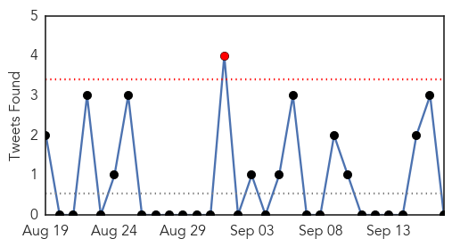
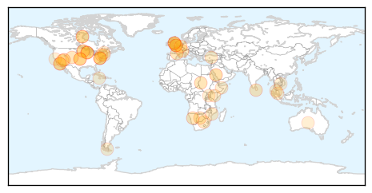
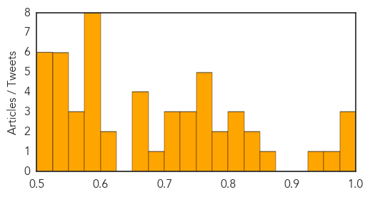

Dengue Fever
30-Day Web Trend
7 alerts, 1 warnings

30-Day Twitter Trend
0 alerts, 0 warnings

Article Locations

Article Confidences

Top Articles:
- 0.994
- India: High Court seeks report from Centre, Delhi government on dengue
- 0.994
- India: High Court seeks report from Centre, Delhi government on dengue
- 0.983
- Delhi Hospitals Struggle to Meet Demand for Beds
- 0.982
- Dengue cases: Delhi hospitals struggle to meet demand for beds
- 0.982
- Mounting cases of dengue trigger bed crunch in government hospitals in Delhi
- 0.981
- Dengue outbreak: Delhi corporations caught on wrong foot over data
- 0.979
- Philippines: Juan Ponce Enrile hospitalized with dengue fever
- 0.977
- 13 fresh cases reported in Noida
- 0.977
- Delhi govt caps dengue test rates at private hospitals
- 0.977
- All four strains circulating in country
- 0.977
- India Grapples with Dengue Fever Outbreak - India
- 0.976
- Dengue menace in Delhi: Toll touches 14, hospitals to take in more doctors : Delhi, News
- 0.973
- Delhi hospitals warned not to turn away dengue patients
- 0.973
- Dengue claims first victim in Haryana
- 0.972
- Dengue scare: Hospital face space crunch; doctors overloaded
- 0.971
- Is goat milk effective in treating dengue? Delhi doctors debunk some myths
- 0.971
- Why desi treatments cannot be blindly trusted
- 0.967
- Laxity by health, local bodies depts hampering anti-dengue drive
- 0.965
- More deaths, more worry, Dengue death toll rises to 14
- 0.965
- Dengue patients won’t be sent to Delhi
- 0.965
- Dengue Toll Rises To 14 In Delhi, Hospitals To Take In More Doctors Mobile Site
- 0.965
- At least 82 positive cases of dengue in Chandigarh
- 0.963
- Guangdong city suffers dengue outbreak
- 0.962
- Home remedies for dengue: Papaya, goat milk top choices
- 0.961
- Panchkula records 5 positive cases, cleanliness drive on
- 0.953
- 14 die of Dengue in Delhi, 1900 more affected
- 0.946
- Romualdez warns: Dengue cases on the rise
- 0.944
- Delhi hospitals struggle with dengue overload
- 0.942
- Delhi govt did nothing in time on dengue: Ajay Maken
- 0.932
- Odisha Chief Minister reviews Dengue Situation -
- 0.927
- Dengue kills three more in Delhi, government caps tests at Rs.600
- 0.927
- Dengue toll 14 in Delhi, extra beds for hospitals
- 0.917
- Bathinda private labs cashing in on dengue scare
- 0.907
- Patients still shuttle between hosptials
- 0.906
- Delhi govt did nothing in time on dengue: Congress
- 0.902
- Patient goes missing, sparks rumours of dengue death
- 0.896
- Dengue marches on, more cases recorded in Ahmedabad
- 0.890
- Training on anti-dengue SOPs held
- 0.886
- Panic over dengue, hospital wards packed
- 0.871
- Lower Parel man dies of dengue fever
- 0.867
- Dengue Cases: Civic Commissioners Asked to Apprise Government Daily
- 0.861
- No beds in Delhi, yet Civil Hospital sends dengue patients to capital
- 0.861
- Dengue crisis exposes gaps in health system
- 0.859
- Latest News & Gossip on Popular Trends at India.com
- 0.849
- Delhi goat-milk sellers make a killing over dengue scare
- 0.843
- Delhi goat-milk sellers make a killing over dengue scare
- 0.839
- New Delhi faces worst dengue outbreak in five years
- 0.834
- Delhi to ban rapid dengue test kit
- 0.816
- Slum bears brunt of dengue outbreak
- 0.810
- China fights dengue by releasing sterile mosquitoes
Showing top 50 articles...
Top Tweets:
- 0.631
- Flavivirus news: Global consortium rewrites the 'cartography' of dengue virus - Medical Xpress:... http://t.co/fBTgIurMfT pathogenposse
Unknown
30-Day Web Trend
0 alerts, 0 warnings

30-Day Twitter Trend
1 alerts, 0 warnings

Article Locations
Article Confidences
Top Articles:
- 0.993
- CDC Says Flu Vaccine Should Be More Effective This Season : Shots
- 0.980
- Saudi minister says MERS cases are reducing before haj
- 0.979
- Time for flu vaccine, updated after misery of last winter
- 0.968
- Malaria deaths down 60 percent, says WHO
- 0.936
- News Scan for Sep 17, 2015
- 0.867
- Shots or masks policy, struck down elsewhere, still unclear at Bluewater Health
- 0.843
- Second death reported in nationwide Salmonella outbreak
- 0.828
- Sudan: Children, elderly die of disease in North Darfur
- 0.811
- Second company identified in cucumber recall
- 0.806
- 200 infected with TB at British school
- 0.802
- '700 million cases' stopped in Africa
- 0.792
- Las negociaciones sobre Brexit: ¿ajustando Europa a la opinión pública británica?
- 0.785
- Livestock virus returns to menace Europe
- 0.772
- Not Up for Debate: The Science Behind Vaccination
- 0.767
- The Island
- 0.759
- Three Salmonella Outbreaks
- 0.759
- Malaria death rates see 60% fall since 2000
- 0.752
- Malaria deaths fall 60 percent since 2000
- 0.746
- NASA employee diagnosed with Legionnaires’ disease — RT USA
- 0.741
- 3rd Person Sues Chipotle after Salmonella Outbreak
- 0.733
- Factors for Higher Risk of Death Following Hip Fracture Surgery Than Hip Replacement
- 0.725
- Needlessly dying to give birth
- 0.716
- One drinking water sample at kindergarten cum child care centre exceeds WHO standard
- 0.712
- Nambour Hospital typo leads to wrong help number
- 0.692
- Gautengers, watch out for these 3 STIs
- 0.663
- Millions of children’s lives saved as malaria deaths plunge: U.N.
- 0.653
- Malaria Death Rates Decreased In The Past 15 Years, But Some Regions Still Hurt More Than Others
- 0.652
- Salmonella in Cucumbers is Not Antibiotic Resistant
- 0.650
- ASF Discovered in More Zimbabwe Swine
- 0.616
- Malaria 'tamed' as death rate drops, saving millions
- 0.611
- Malaria deaths fall 60 percent since 2000: UN
- 0.596
- Why Young Women All Over the World Are Still Dying in Childbirth
- 0.594
- Danbury scientists link common virus to cancer
- 0.592
- 2 new Nevada salmonella cases possibly linked to imported cucumbers
- 0.591
- Malaysia General Business Sports and Lifestyle News
- 0.589
- Officials blame tomatoes for MN Chipotle salmonella outbreak
- 0.582
- Drought in Somaliland - Somalia
- 0.578
- Vaccinate against rotavirus - Letters
- 0.577
- More Nevada salmonella cases linked to cucumbers
- 0.557
- Boil water order given for Hildale and Colorado City areas
- 0.557
- Boil water order given for Hildale and Colorado City areas
- 0.552
- Rabies cases prompt mass dog cull, quarantine
- 0.549
- the world is beating malaria, for now (Wired UK)
- 0.549
- Millions of children's lives saved as malaria deaths plunge: U.N.
- 0.548
- Dominican Rep. Reports 3rd Death from Bat-Transmitted Disease
- 0.546
- Hospital , health centre operations return to normal – Health Ministry
- 0.543
- Ten Vermont Community Health Centers get $2.7 million
- 0.527
- Millions of children's lives saved as malaria deaths plunge: UN
- 0.525
- Health Cluster Coordinator
- 0.524
- US, Cuban diplomats meet at Haiti hospital to provide care
Showing top 50 articles...
Top Tweets:
- 0.557
- RT: No se trata de la habilidad para hacer algo. Se trata de la disposición, el deseo, y el compromiso de hacerlo de la me…
- 0.552
- I got my flu vaccine today! Why flu prevention matters: @CDCFound Business Pulse http://t.co/ajBgphEKI9
- 0.539
- Everyone 6 months and older should get an annual flu vaccine. Protect yourself against the flu. http://t.co/9dIfK4YCxP
- 0.521
- RT: Para que el niño de hoy sea el hombre de éxito de mañana, cada padre debe ser un maestro y cada hogar una escuela. FxST…